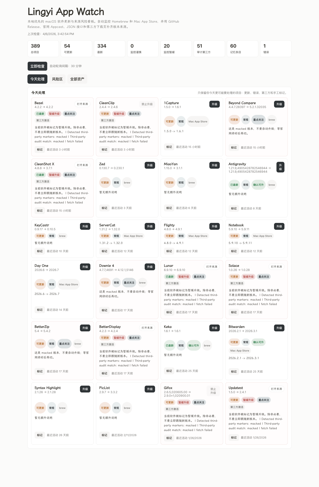

你会知道哪些软件已经有更新，哪些更新来自什么渠道，不用在多个地方来回切换。
这是 `Lingyi App Watch` 的介绍页和上手说明。这里展示的是公开示意内容，不会读取你的真实软件列表，也不会暴露你的个人设备数据。
macOS 软件更新助手 · 本地运行 · v0.3.0
帮你把 Mac 上的软件更新，整理成一张真正能做决定的清单。
很多人的软件来自 App Store、官网、GitHub、brew，甚至历史安装包。Lingyi App Watch 会把这些更新入口收拢到一起，再告诉你哪些可以放心更新，哪些应该先看看来源、授权状态和兼容性。它不是只提醒“有新版本”，而是帮你判断“现在要不要升”。
它更适合什么人
如果你的软件来源比较杂，或者你很在意授权状态、兼容性和更新风险，这类场景会更明显地感受到它的价值。
有些软件升级后可能影响授权、插件、配置或工作流。你可以把它们单独压到风险区，先评估再处理。
它支持筛选、排序、批量标记和命令行查看，适合把“软件更新管理”变成一件持续可维护的事。
第一次使用怎么开始
你不需要一次就把所有软件都配置完。先跑起来，再逐步把常用软件补进来，通常更轻松。
启动后，系统会先自动发现本机的软件、版本和部分安装来源。你可以先看到一份基础清单。
把官网更新页、GitHub Release 或其他稳定版本源补进配置后，检测结果会更完整、更实用。
如果某个软件暂时不要动，或者你想等一等再看，可以直接标记成“不要升级”“重点关注”或“待核验”。
每天先看今天要处理的更新，再看风险区。能一键升级的直接处理，其他项目按提示手动确认。
你可以在网页里筛选、排序、打标记，也可以在终端里快速查看状态，适合不同的使用习惯。
公开页面只展示产品说明和截图，不展示你的真实软件数据。扫描、判断和标记都优先在本地完成。
界面会长什么样
下面这张图展示的是当前版本的真实面板。你可以在一个页面里完成筛选、排序、打标记和处理更新。
Lingyi App Watch Dashboard
你会看到今天要处理的更新、谨慎项目、第三方来源提示，以及批量标记和排序能力。

下载与更新
当前版本通过 GitHub Release 提供。后续版本也会继续按版本记录更新，方便你查看变化后再决定是否升级。
当前版本可以做什么
`v0.3.0` 已包含多来源版本监控、风险优先排序、人工标记、批量处理，以及网页内的一键升级或手动处理提示。
后续会怎么更新
后续版本会继续通过 GitHub 迭代发布，这个说明页也会一起更新，保持产品介绍、截图和实际能力同步。